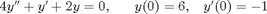
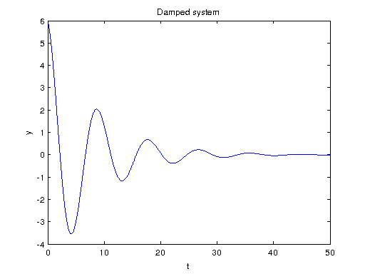
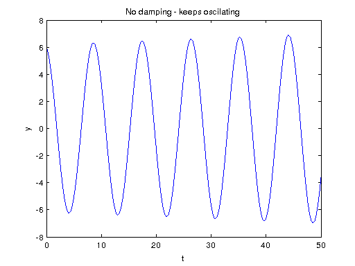
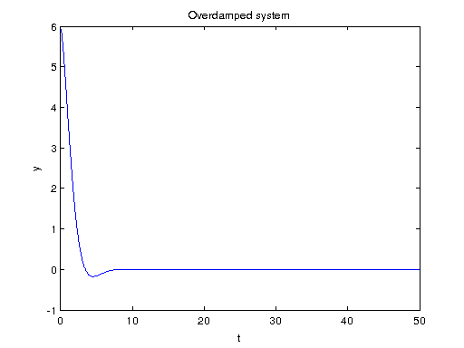

Math 340 - Lab #14
Contents
Assignment due Tuesday 5pm
Use a change of variables to convert the 2nd order differential equation to a system of first order differential equations, and then solve this system using Euler's method.

This equation describes a damped oscilator (e.g. mass on a spring). Vary the constant coefficients in the equation, and see how the solution behaves. Try to produce 3 qualitatively different solutions and describe what kind of oscilations are obtained.
Solution
% a y'' + b y' + c y = 0 % coefficients are saved in a matrix "coeffs", this makes it easy to run 3 % different cases by using one loop clear all; clc; coeffs = [4 1 2; 4 0 2; 1 1.5 1]; PlotTitle = {'Damped system', 'No damping - keeps oscilating', 'Overdamped system'}; for i = 1: length(coeffs(:,1)) [t , x] = euler2_withCoeffs(@systemODE, 0, [6; -1], 0.01, 50, coeffs(i,:)); figure(i) plot(t, x(:,1)) title(PlotTitle{i}) xlabel('t'), ylabel('y') end


